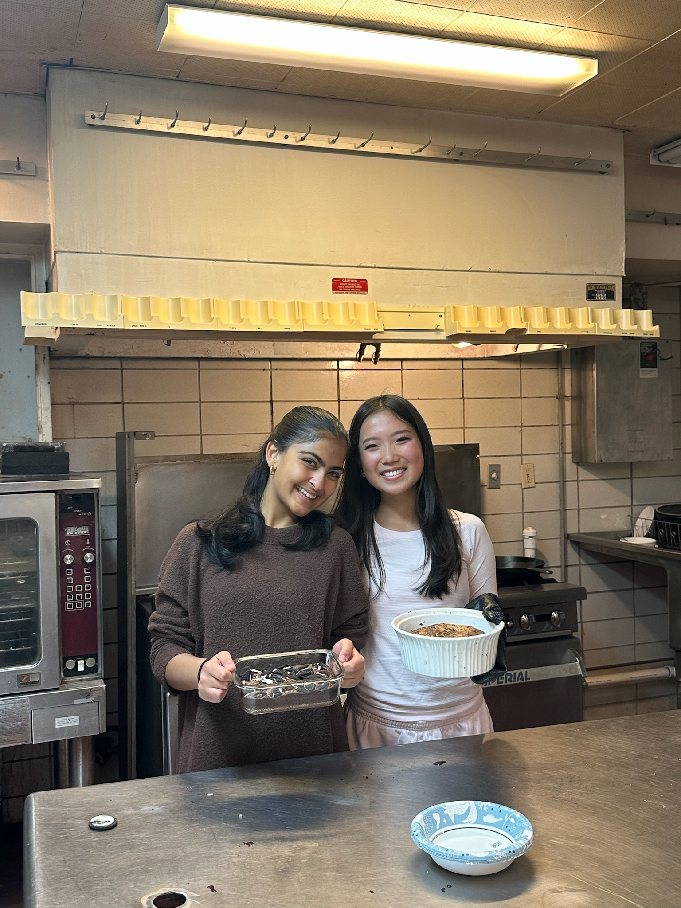
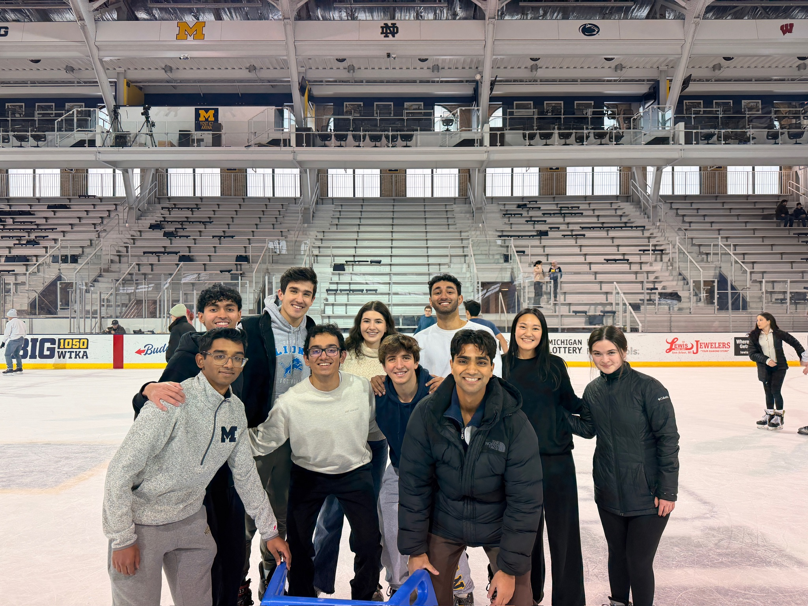
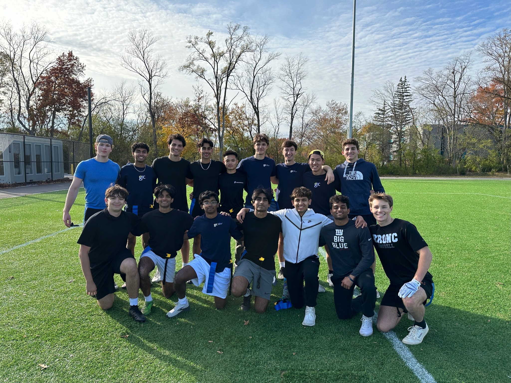

Weekly meetings at the Tozzi Trading Center, pitch competitions with top sponsors, mentorship, and social events that build relationships lasting well beyond graduation.
GIC has club meetings every Wednesday in the Tozzi Financial Trading Center. During these meetings, members come together to pitch an investment with their group, as well as engage in a discussion or debate about market events. Additionally, senior members also hold a discussion around some niche topics in finance. Through this, members gain an engaging platform to voice their thoughts as well as interact with other different perspectives to ultimately develop a holistic view of the topic.



Every Wednesday at the Tozzi Financial Trading Center. Members pitch investments, debate market events, and discuss niche finance topics to develop a holistic perspective.
Annual pitch competitions with top sponsors including Warburg Pincus. The Activist Investing Pitch Competition has students simulate full activist campaigns.
Modeling workshops, Bloomberg & FactSet training, career panels, interview prep, and a structured mentorship program pairing underclassmen with upperclassmen.
Alumni dinners, networking mixers, and team events throughout each semester that build a tight-knit community lasting well beyond Michigan.
During weekly education sessions, members gain a holistic understanding of finance and accounting concepts and develop a strong technical foundation. Freshman and sophomore members are paired with an underclassman and upperclassman mentor based on shared career aspirations. Members gain individualized career and recruiting support throughout their time in GIC.